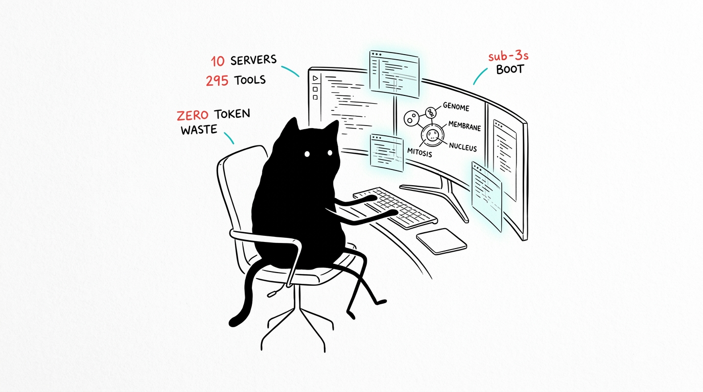

SPEC_05 // 1999AZZAR-MCPDOSSIER: VERIFIED_OUTPUTS
Showcase
Recorded verification gates and a production deployment synthesized end-to-end by HeLa Phenotype — the same workflow C documented in 05 Workflows.

Verification gates
| Gate | Result | Evidence |
|---|---|---|
setup.sh doctor | 10/10 READY | Stdio JSON-RPC handshake per cell |
npm test | 13/13 in ~2.5s | 10 handshakes + 3 cross-MCP synergies |
npm run test:matrix | 70/70 | Profile × client schema accuracy |
Video demonstrations
Recorded walkthroughs of two cells doing their primary job.
DEMO_01 // PHENOTYPE — design tokens and OKLCH palettes
DEMO_02 // GENOME — living knowledge graph with FTS5
Terminal recordings
Asciinema captures of the verification gates. Replay with asciinema play <file> or open in any .cast-compatible viewer.
| Recording | Command | Covers |
|---|---|---|
| setup.cast | ./setup.sh | Install and build |
| doctor.cast | ./setup.sh doctor | 10-cell health diagnostics |
| matrix.cast | npm run test:matrix | 70 profile × client combinations |
| integration.cast | npm test | 13-test integration suite |
Production exhibit: Ellis UI Archive
Live at demo-designer.glassgallery.my.id — 24 bespoke component design systems generated through hela-phenotype:generate_tokens → generate_8state_component, verified in-browser via hela-cytosol, recorded in hela-genome. This is workflow C executed against a real deployment target, not a mock.
REPRODUCTION PATH
Tokens (
generate_tokens) → Tailwind (generate_tailwind_config) → components (generate_8state_component) → verify (browser_screenshot) → record (add_observation). Every step is a documented tool call.